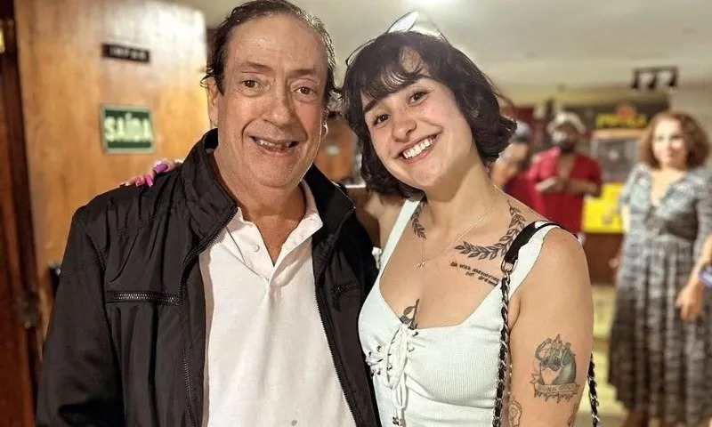

<!--Links de estilização-->
<link href="../../static/css/style.css" rel="stylesheet" />
<script src="https://cdn.tailwindcss.com"></script>

<article class="grid h-full rounded-lg">
  <a href="nomepost.html" target="_blank" rel="noopener noreferrer">
    
    <figcaption class="flex flex-col gap-3 p-3">
      <h5 class="flex-grow text-xl font-bold">Beiçola do privacy - Musa digital</h5>
      <p class="flex-grow w-full h-56 overflow-y-scroll">
        A beiçola do Privas é uma verdadeira musa digital que conquistou a internet com seu carisma
        e autenticidade. Com um estilo único e uma presença marcante nas redes sociais, ela se
        destaca não apenas pela beleza, mas também pelo jeito leve e divertido de se comunicar. Suas
        postagens são uma mistura de humor, moda e empoderamento, inspirando seguidores a abraçarem
        sua própria individualidade. A beiçola não é apenas um ícone de beleza, mas uma
        influenciadora que promove a autoestima e a diversidade, mostrando que todos podem brilhar à
        sua maneira.
      </p>
      <p class="flex-grow"><small class="flex-grow text-gray-600">19 de Setembro de 2024</small></p>
      <div class="flex flex-grow w-full gap-3 px-4 py-2 border rounded shadow-sm full">
        
        <p class="my-auto"><strong>Wendrell</strong></p>
      </div>
    </figcaption>
  </a>
</article>
